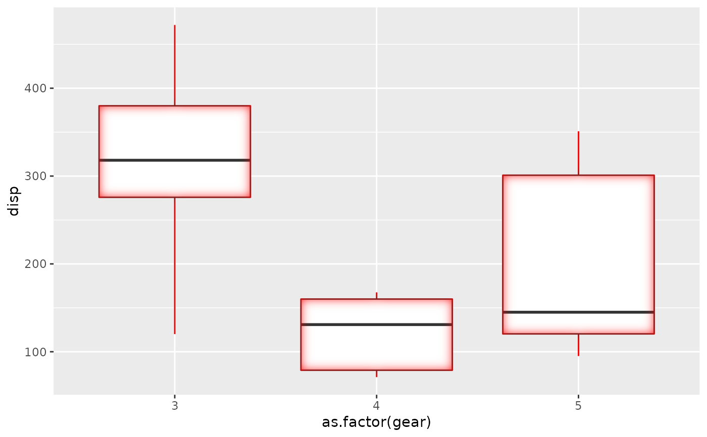
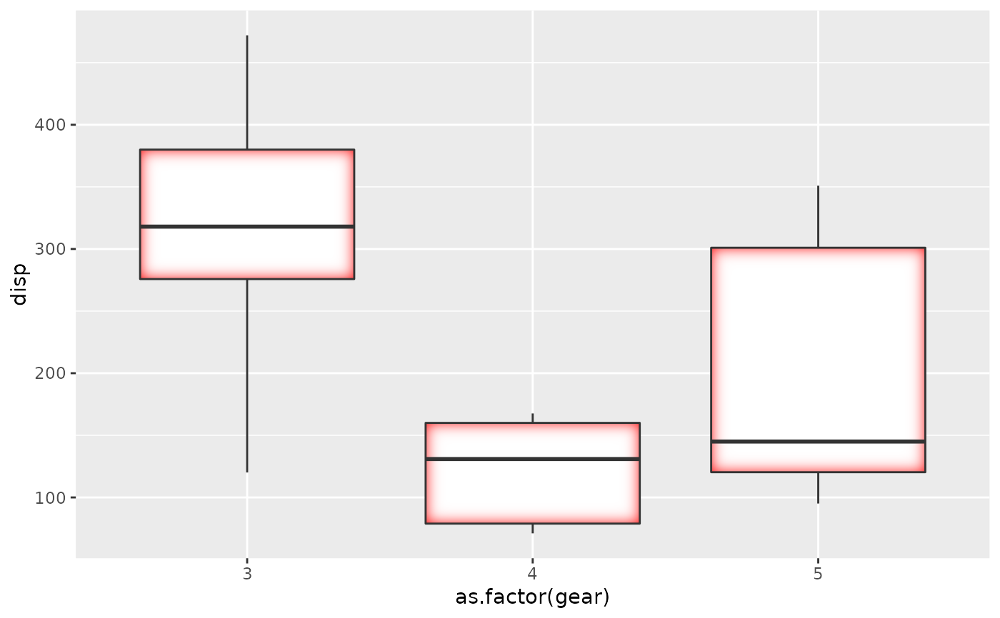

This filter adds an inner glow to your layer with a specific colour and size. The best effect is often had by drawing the stroke separately so the glow is only applied to the fill.
with_inner_glow(x, colour = "black", sigma = 3, expand = 0, ...)
| x | A ggplot2 layer object, a ggplot, a grob, or a character string naming a filter |
|---|---|
| colour | The colour of the glow |
| sigma | The standard deviation of the gaussian kernel. Increase it to apply more blurring. If a numeric it will be interpreted as given in pixels. If a unit object it will automatically be converted to pixels at rendering time |
| expand | An added dilation to the glow mask before blurring it |
| ... | Arguments to be passed on to methods. See the documentation of supported object for a description of object specific arguments. |
Depending on the input, either a grob, Layer, list of Layers,
guide, or element object. Assume the output can be used in the same
context as the input.
Other glow filters:
with_outer_glow()
library(ggplot2) ggplot(mtcars, aes(as.factor(gear), disp)) + with_inner_glow( geom_boxplot(), colour = 'red', sigma = 10 )# This gives a red tone to the lines as well which may not be desirable # This can be fixed by drawing fill and stroke separately ggplot(mtcars, aes(as.factor(gear), disp)) + with_inner_glow( geom_boxplot(colour = NA), colour = 'red', sigma = 10 ) + geom_boxplot(fill = NA)